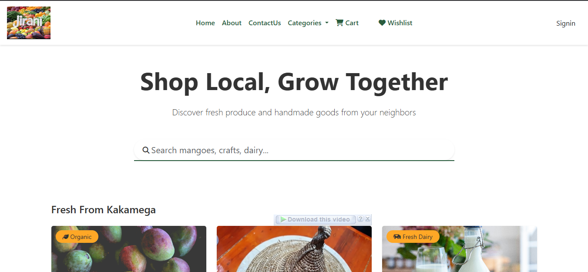
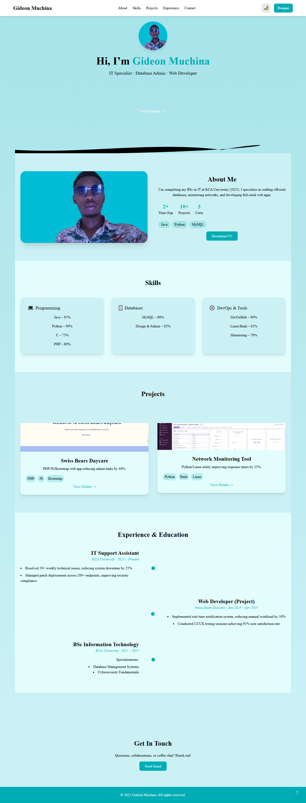
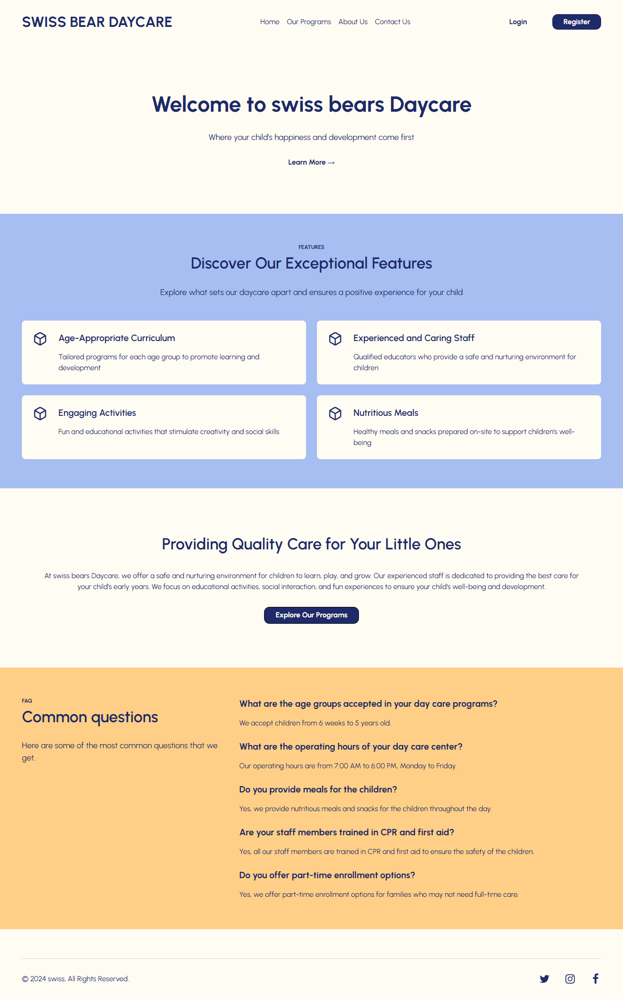

FlagshipCloud ISP Billing & Traffic Platform
Billing, RADIUS/PPPoE enforcement and live traffic monitoring on Elixir, Phoenix & Ash.
ElixirAshLiveViewMikroTikRADIUS
Case study
Head of Technical Support at an ISP tech firm. I work across the whole stack — from MikroTik, RADIUS/PPPoE & WireGuard on the wire to Elixir / Phoenix / Ash billing and automation in the cloud.
I'm a Nairobi-based engineer and Head of Technical Support at a leading ISP solutions firm. My day is a mix of subscriber authentication (RADIUS/PPPoE), traffic control on MikroTik, and shipping backend features in Elixir.
I enjoy going deep — WireGuard tunnels, VLAN segmentation, Linux administration (Kali daily-driver 🐧) — and then turning what I learn into tools that make support faster and billing reliable. Off-screen, I play chess ♟️.
RADIUS, PPPoE, queues, VLANs, WireGuard.
Phoenix LiveView, OTP, real-time dashboards.
Hardening, Docker, packet analysis.
Triage, SLAs, fast root-cause diagnosis.
Click any project for the problem, approach and outcome.

FlagshipBilling, RADIUS/PPPoE enforcement and live traffic monitoring on Elixir, Phoenix & Ash.

E-commerceHyperlocal marketplace with Admin, Vendor and Customer dashboards and real-time delivery tracking.

Web appCheck-ins, automated attendance reports and parent–caregiver communication in one place.
Filter by area. Hover a chip to see where I use it.
Full-stack, C, Linux systems, DevOps, algorithms.
RouterOS, VLANs, firewall/NAT, wireless, queues.
Core services, security and billing fundamentals.
KCA University — networks, software engineering, databases.
IP surveillance, NVR configuration, access control.
Kenswed TVET — OOP, data structures, desktop apps.
ISP infrastructure, MikroTik, Elixir development, or a full-time role — I reply within 24 hours.